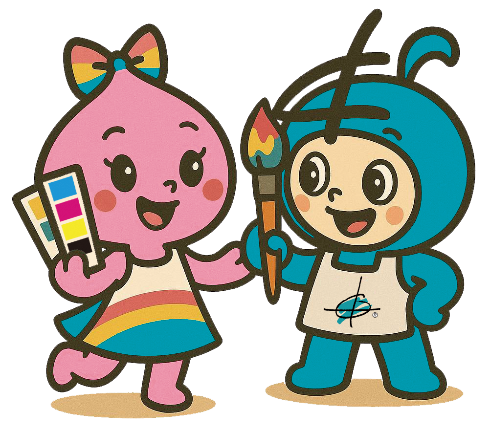
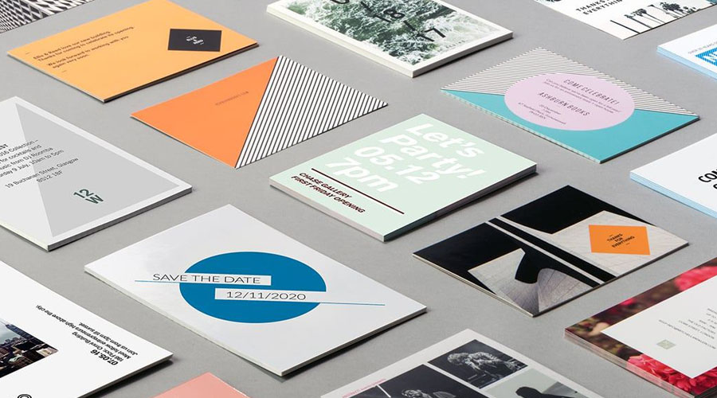
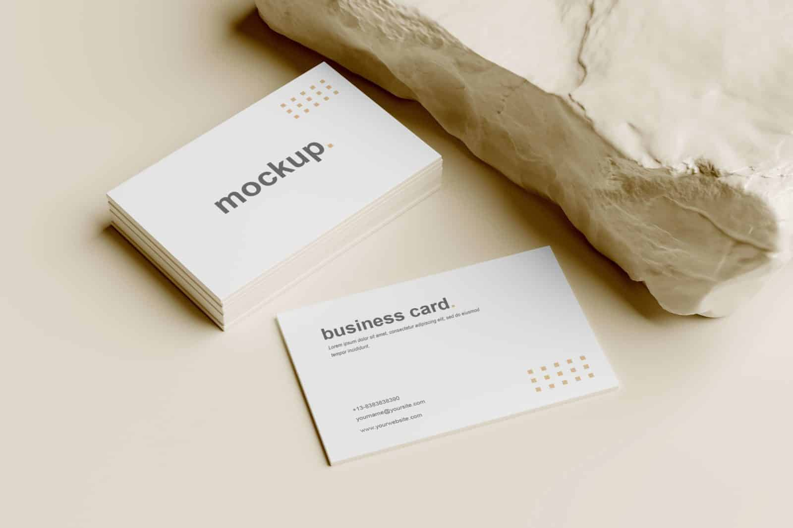
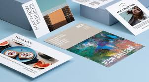

品牌與商務印刷
名片、信封、DM、菜單、優惠券與店內公告，適合開店、活動推廣與日常營運。
你可以帶著檔案來，也可以只帶著初步想法。
JOY 會協助確認用途、規格與製作方式!
名片、信封、DM、菜單、優惠券與店內公告，適合開店、活動推廣與日常營運。
海報、輸出、貼紙與展示品，協助活動現場、校園專案與商業展示快速到位。
提袋、包裝盒、月曆、喜帖與特殊商品，讓品牌在送禮、販售與紀念時更完整。

為品牌加一點記憶點
好的印刷品要能被看見、被理解、被保留下來。新版網站也用同樣邏輯整理服務，讓客戶更快知道你們能做什麼、適合什麼情境、如何開始洽詢。
告訴我們用途、尺寸、數量、交期與是否已有檔案。
協助挑選紙材、加工方式與適合的輸出方案。
檢查解析度、出血、文字與印刷可行性。
完成輸出後可到店取件，或依需求討論配送。



「每次要做名片、貼紙或活動印刷，都能很快幫我整理規格，也會提醒檔案要注意的地方，成品很穩。」
李小姐 商務印刷客戶「活動前臨時需要海報和文件輸出，JOY 溝通清楚、速度也快，讓現場布置順利很多。」
張先生 活動輸出客戶「客製商品從材質到尺寸都有人協助確認，不會只是照印，會一起想怎麼做更適合。」
K 客戶 客製製作客戶新開店需要名片、菜單、優惠券與貼紙，希望整套視覺一致。
店家與品牌活動前需要海報、輸出、邀請卡與現場物料，希望交期穩定。
活動與校園專案想做喜帖、月曆、提袋或包裝，希望有人協助從規格開始整理。
個人客製需求開始製作
 掃描 QR Code 加入 LINE
掃描 QR Code 加入 LINE
傳送參考圖片、尺寸、數量與交期，會更快取得建議。